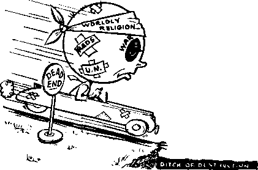

21
News sources that are able to ke%p you awake to the vital Utmea df our times muat be unfettered by censorship and selfish interests* "Awakfl” h« no frtfrm. It r«cogniira facts, facg* facta, U free to publish facts. It Is not bound by political ambitions or obligation*; it is unhampered by advertisers whose toea must not be trodden on; It le unprejudiced by traditional creeds. This journal keeps itself free that It may speak freely to you. But it dws not abuse its freedom. It maintains integrity to truth,
"AwakeI” uaes the regular news channels, but is ncd. dependent on them. Its own ccircspoadcntB are on all continents, in scores of nations. From the four corncru of the earth their uncensored^ on-the-scenes reports come to you through these columns. This journal's viewpoint Is not narrow, but is to li± motional. It u read in many nations, in many languages, by persons of oil ages* Through its pages many fields of knowledge pass in review—government, commerce, religion, history, geography* science, social ccudiltoiu, natural wonders—wby,dts coverage is as broad as the earth and a# htyh ajt the heavona,
"Awake I” pledges Itself to rigliieouj principles, io exposing hidden, foes and subtle dangers, to championing freedom for oil, to comforting mourners and strengthening those disheartened by the failures of a delinquent world, reflecting sure hope for the vs Lab Lu h ment of a right' ecus New World.
Get acquainted with "Awoke!” Keep awake by reading "Awake!”
ULKV^Ift
^rwlwo.xvRGT Hr watchtow ct< mudej anti t<iact eoejorr, wc.
117 Adams tHo-rt -N. n. Kpoab, preilici** Flv* eehta a cooy
ItHrltlMWi ihrtltf be wnt Ifl A* h> r*>ir rtwm-tn In fMiplMoa *Jlh nuvutlinn fJliut** .U, fUHrtiT of tnnrty MHifUntt* krt vnrpird u KpwiMjb fraia cwniriM m <dcr h jj luL^UJutoe,*! wtniMf wd*» StibWprlMi nw in c^uukln “c I"*1 «Uie4 J» i«*l
^ynRliTf- ■
NftiM rf wFlrrfkm Iwiih iroeiril bland u Am
•I Imt tw« beta* nih-rlfTiiMi Mitra
raumJ tt tema-tliB mttiv »i ftvjkijt. N.
Krnokirn i, 5. YM IX ft. a, Ghant fleer* toru
On* dollar * /ear
Ch*a* rf aMfm wtrh itni ic out uffks nu> be •IpAqp) r*V<-1ltr ULhiu [ft 9p1)LD Sflffl Jn>U B-M u bt:j w nr« admtL.
4 Ara Yca'if BiilwrtotJjn hti
*•*40. r».. IK WMu Ai.. SraAlrn 1, NI. Il AMlrtiia, 11 BemJjrf Rrf . SlTJinfrld, N S.W. r—-*-, in Irvin Aee., Temnto !ir OhujIq 11 EmUel, 34 Cr*T<fl Tenvcc, I^khJuu, W. 3 Be Mell Attic*, 613 Cap* Town fa
T. An rf Mirth 3. 11?4 Frinlri in U. A 1.
CONTENTS
tortketeers in Charity
Na Accounting of Kund? <^ollreted Charity Begin* at Cnlleetors’ Home S<jare Campaigns
Attempts to Curb the Racketeers
Transportation Troubles
Easing the Bousing Shortage
Psychiatric Prattle
Worldly Religion ’a Head End
Who Shall Ba the SaviorT
: Religion More Worn Out than Politics Religion Responsible for Delinquency
3
4
&
6
7
A ;
9
11
12
13
13
16
Oddities in the Nevrs
Secrets of th? Salad Bowl
Leonardo and the Church
The Wise Old Owl
A Wise-lookinChatterbos
Mskinir Nu Fuss over Mating Matters Brua'iiing GalUtoncs bv Sound Watch Your Wallet—Pickpockets Do! "Thv Word Is Truth"
vtfhy Deri! Permitted to Live The Symbol of South Africa Watching the World
16 17
16
20
21
21 03 34
27
27 29
Volume XXXI Brooklyn, N.Y,, June S, 1950 Number 11
RACKETEERS and charity have things in common. Both are keenly interested in your money. Each is Un inseparable f feature of capitalist society. True charity nineteen centuries ago meant to sell what you have and “give to the poor”. Modern charity, wrote Paul Laf argue, “'means to steal wholesale, and [>ive away retail?" In America charitable institutions are viewed as pillars of virtue and somewhat sacrosanct. Little wonder that the sacred name of charity has shielded operations of sorneof the “meanest crooks on eartir. You, Mr. Average Citizen, are their perennial victim.
Fake charities rob the American public of an estimated $100,000,000 a year. Chicagoans are swindled of $5,000,000, and their Los Angeles cousins lose $10,000,000 annually. The “take” in New York city is purportedly “beyond estimation” It was against such exploitation that the New York Star protested: “Many dubious characters have made a career out of running phony charity campaigns —entertainments, games of chance, or high-pressure solicitations—under the cloak of reputable agencies. Very often, the organization or charity gets less than a tenth of the funds raised by the slick racketeers,"
The multimillion-dollar hoax is plied across the nation through four common channels: door-to-door solicitation,street and subway solicitation, high-pressure telephone and mail solicitation, and charity entertainments. The charity racket-
JVNE 8, 1950
eers, quick to recognize the taking ways of many orthodox religions, often duplicate the formula for success. “Many of the worst rackets,” commented the Star, “operate under the protecting cloak of religion.” Tn some states it is an easy accomplishment for a smart operator to get himself and a few henchmen incorporated as a “church”, and he is ready for business. A more highly organized charity racket may lease copies of its certificate of incorporation to associates at a flat rate, or, send them out garbed as “ministers” or “nuns”, giving them 25 to 50 percent of the daily haul. One such enterprise was the “Mount Zion Remnant Church of Christ” in Queens, New York, whose white-robed “nuns” admittedly received 50 percent of the profits, until the state attorney general revoked its charter. So numerous were the ch arity racketeers dressed as nuns or priests in New York, that the Roman Catholic archdiocese recently instructed its own mendicants to cease begging in front of subway stations or department stores.
The high-sounding “American-Catholic Orthodox Church” was another outfit that made charity a worthwhile enterprise. For fifteen years its “Community Mission”, on Manhattan’s West 40th street, obtained funds to finance fictitious summer camps and recreation centers supposedly operated by the “mission”. 5V hen prison sentences ended their career in 1946, the racketeers were picking
3
the public’s poRkni for $100,000 every year.
"Wortftp Charities”
Newspaper accounts of the goings-on of such swindlers invariably lament that some “sorely needed” funds have been diverted from other "worthy charities”. The general impression conveyed is one of sympathy for the "legitimate" charities, which, like fabled royalty, "can do no wrong?’ Such subsidized myths would have you believe that the only racketeers in charity are ex-hootleggers, “out of work” since the repeal of prohibition. Unusual, however, was Miami Life's screaming headline of January 22. 1949: ‘'Miami Salvation Army’s ‘Charity’ la Nothing but a Petty Rack kt?” fnrmsed at the alleged refusal of this well-known organ frat tort to extend ita charity to a blind man for more than one night, the censure declared; .
We think it's the most vicious and hypocrit-ieal racket perpetrated ujwn the charitably minded people! . , * This incident shown the Halvatfrn Army really doesn’t care for anything or anybody . . . that its officials are interested only in piling as much as they can into their treasury (wonder if much of it goes, as rumored, to the founders of the racket in England?)—and it piles up pretty high, with all the money, strap paper, old furniture and clothing (all of which is quickly converted into cash and not dealt out to the poor, as popularly believed) that gullible Miamians pour into it. Miamians should cease supporting the Salvation Army. . , . They should be just as callous toward the Salvation Army as it is toward the needy.
Miami Life probably was very skeptical when the Salvation Army claimed the appointment of Frank Costello (ex-conviet and reputedly head of the major rackets in Noir York city and along the eastern seaboard) as one of its fond* raising chairmen was all an accident, especially when the Salvation Army "decided it hadl no legal right to refuse the $18,000 raised by Costello, because it was contributed for religions and charitable purposes”.
The birth of the new Mate of Israel opened up new vistas of operation for the charity hoax and unleashed a host, of "relief” for Palestine drives, Alert to this new threat from the charily £umc
-was reporter Albert Deutsch : "There are several worthy orphanages in Israel/he wrote, “but judging by the multitude of charity solicitors dunning New York Jews for funds, it would appear that all Palestine is populated exclusively by orphans!" Experts in the field of Jewish philanthropy have long been concerned about the activities of Palestine ‘’charil jrs" Dr. Mark Wfachni tiers study of the problem for /be (*<f until <?f Jewish Federations and Welfare Funds in 1946 was candid in its findings. Admitting that "substantially le^s" than the amount collected by Jewish agencies ever readies Palestine, Dr. Wfrdinitzer’s report revealed :
While the dffices vary Bamewhnt in their fund-raising and office-management procedures, many nf theni full short of minimum standards established by endorsement, agencies in the philanthropic field. . . . Administrative and fund-ruising costa are excessively high, usually amounting to about 40 to 50 percent of collections.
Other authorities say this estimate of "costs” fr too low—a bona fide Palestinian institution can consider itself fortunate if it receives 20 or 30 percent of the "charity” funds raised here in its behalf 1
No Accounting of Funds Collected
According to Nations Business, many charity "campaigns are conducted by about two dozen professional fundrairing organizations, which operate na tionaiiy. Most of these, like the John Price Jones Corporation, are legitirrmte businesses. There arc also as many as 150 less legitimate fund-raising organi-
zations, many of which operate only in restricted areas. They are interested only in their share, which often turns out to be the lion’s share". In the 1922-45 period, American charities raised more than $23 billion, as reported in the Yearbook of Philanthropy. But when has charity’s priesthood ever given the public an open accounting of the billions raised in behalf of humanity! The lack of such accounting was the subject of severe criticism by Emanuel M. Josephson, M.D., in his book, Your Life Is Their Toy:
One of the principal benefits which the social service racketeers confer upon mankind, in return for the support of their activities, is a deluge of statistics. They publish statistics on ... no end of things. But never has the social service racket published any statistics that truthfully reveal what their support costs the public, or what percentage of the funds which they gather in the name of the poor and unfortunate is expcndedjjn their own salaries. Such information is systematically refused the public who contribute and support.
As to how the activities of major social services differ from the everyday “garden variety of rackets”, Dr, Josephson explained:
In no wise except that they are accepted as genteel and proper, and entirely within the law. . . . When organized social service is involved, fraudulent collection of charitable funds and their conversion to other uses than those represented to the contributor becomes legalized and sanctified. The very magnitude of the funds involved—billions of dollars each year—has served to make it one of the most “respectable" of the Big Business group. Flying the banner of “charity", and consequently utterly unsuspected by the gullible public, it has grown into a perfect specimen of the racket.
In their desire for wealth, organized charity has long considered the common beggar a serious competitor. Such articles as “Don’t Give to Beggars" (The Forum, June 1938) have warned the publie not to “spare that dime", if by giving it you think you can “fob off your responsibility to organized charity". When it comes to charity’s responsibility to account for the public’s funds, they insist that “that is their business”. No doubt it is their business, and a profitable one at that.
Occasional leaks in the wall of secrecy surrounding charity’s operators show complete agreement on “the best possible way to spend charitable funds”. Many popular charities had their humble beginning in New York state around the turn of the century. New York’s charities, among the country’s most influential, fell into such disrepute in 1914 that an investigation was launched in the state legislature. Hearings before the Thompson Committee made shocking disclosures of the misuse of charitable funds by the “Charity Trust”. The “brains" of the charity rackets often held positions in several organizations by interlocking directorates. From this vantage point it was a simple matter to divert funds to personal, political and commercial ends.
Committee hearings uncovered a nest of racketeers in charity. The general secretary of the Charity Organization Society netted $20,000 a year from only two of the positions held. The secretary of the society’s Buffalo branch received a salary $4,000 higher than that of the mayor of Buffalo. The head of the State Charities Aid Association, it was learned, received $100 per “working day” as a Public Health Council member, in addition to a fixed salary of $8,000 per year as SCAA head. Charity’s affiliations even included “reciprocal” deals with big business.
Senator Thompson later introduced a bill to further investigate the charity swindle. Mustering all of its resources and paramours, the Charity Trust waged a bitter and successful fight against that
bill, which died under the governor's veto. The wrath of public sentiment forced a temporary halt, hi the illegal traffic. When the embers of public anger no longer smoldered, charitv's leadership was found to he in the hands of such organizations ae the New York Tuberculosis and Health Association, all of which exploited the public's fear of disease. It is that same fear of disease that today brings millions of .dollars annually into the coffers of organized charity.
The cries to help fight cancer, tuberculosis, heart trouble and many other diseases are familiar sob-stories ‘ when charity “passes the hat”. Frequently, ns in the case of "Christmas seals", the nation's ratlin and press join hands in behalf of "the chub?*'. The bulk oF funds are usually divided between the local find national organizations. A small fraction of it may even bp used for subsidizing research. The people who generously contribute to the charity, however, are led to believe they are directly aiding the oppressed.
The use of Christmas seal funds by the New York Tuberculosis and Health Association was revealed in a loiter to the New York Times From Dr, Louis I. Harris, former commissioner of health of the city of New York, ex officio and honorary officer of the local association r
So far ais I have been able to discover, dur ihg many years of inTimate contact, an utterly insignificant fraction of the several millions collected by the New York Tuberculosis and Health Association during the past decade and a half has been used to supply diagnostic care, medical treatment, sanitarium or hospital care, or any nf the necessities of tuberculosis patients or their families Tn fact, I am confident that none of the money is used to assist those suffering from tuberculosis. . . . the funds have been utilized . . . first and principally for salaries to workers to carry on its propaganda.
If the prospective contributor tn the Christmas seal business would carefully read the 1949 Christmas seal sales latter, he would nowhere find the promise that money received goes directly to the TB victim. The one seeking charity's aid, according to Dr. E. Josephson, is "given, or sold, pamphlets tolling him what attention he should have, where he should live, what he should eat—everything but that most vital advice, where be could get the money with which to do it”.
Scare Campaigns
When charity s noble institutions scare the public into contributing with a 'You may be next!" one wonders if they refer to the public's falling victim to the disease or to the eharity racket. The morbid fear of cancer moves millions to pour their money into the cancer associations, which premlijinbly wage relentless war on the disease. According to Four Life h Their Toy (Josephson), the “war" ie iimre zealously waged against your pocketbook:
The>c cancer tciationa have not uecd the funds which they have gathered for the relief of cancer victims or for the payment nf institutions for their care. The money haa been uyvil for die payment of salaries to the medical bosses find to other personnel and for public-' ity, propaganda and advertising that lu^ed more victims, . . . The more closely one studies the situation, the mure une is inclined to wonder whether the true function of these cancer associations is ngt to place cancer quackcry on a higher level and on a more lucrative financial plune.
If you manage to tighten your heart and purse stringy enough to see through’ the exploitation of bugaboo diseases, don't feel too confident There are hundreds of other chariI ips sizing you up as a “mark". “The leech has two daughters," says the proverb, “saying: ‘Give, give.'" Life magazine (November 14, 1949) shows the notion's Community Chests seeking a modest $185,000,000 for U. S. charities. “Even the Red Cross, which has traditionally remained aloof from
united campaigns, joined in.” Why look a gift horse in the mouth when all you have to do is get on and ride it in the $185,000,000 “charity sweepstakes”? The Red Cross did just that, and their share of “the purse” will be plenty. How, when and where the impoverished, sick and needy will benefit from the funds are all good questions for the answer man. Charity’s collectors will not answer them.
Turning to the World Almanac (1948) one finds the National Foundation for Infantile Paralysis considerate enough to disclose that “since the establishment of the National Foundation in 1938, a total of $39,060,869,48 has been left with its chapters for local aid to infantile paralysis victims”. In the same period of time $25,944,285.99 has been authorized “for reseach, education and epidemic aid”. The brief report does not reveal the total amount of money raised in all that time, nor does it show, beyond a general statement, how that money was actually spent. When the results of the 1947 fund-raising appeal ($17,987,800.66) are compared with the amount authorized “for research” in a ten-year period, one wonders what became of the other millions received by the Foundation in all that. time. No accounting is given of the amount applied to salaries or other “overhead”.
The Foundation’s annual “March of Dimes” is held during the last two weeks in January, commemorating the anniversary of the late President Roosevelt’s birthday. The function of the “March of Dimes”, prior to Mr. Roosevelt’s demise, was carried on and known as the President’s Birthday Ball. Interesting is the declaration of Dt. Joseph S. Wall, of the Georgetown University Medical School, before a Subcommittee on Public Health, Hospitals and Charities of D.C.: “Not. one penny of that fund (Birthday7 Ball) will go to buying a crutch for a crippled child. The majority of the dollars in that fund will go for the purchase of monkeys.”
In some cities, however, alert citizens are beginning to seek a basis, if any, for their faith in organized charity's widely touted virtues. Oakland, California; Oklahoma City, Oklahoma; and Winston-Salem, North Carolina, have decided to clamp down on all community-wide fundraising activities. Committees have been formed to investigate the status of any charity7 seeking the public’s money. If not satisfied with an organization’s worthiness or integrity, the committee does not approve of the solicitation and advises the public not to contribute. Little wonder that the Winston-Salem committee challenged the “March of Dimes”. It questioned the Foundation’s need for more than $15,000,000 in national reserves, plus almost as much “lying idle” in local chapters. The committee looked distrustfully at the “campaign costs” of 12 percent, plus “administrative costs” of 15.5 percent. It doubted the necessity for the Foundation’s increase in net income from $1,349,000 in 1939 to nearly7 $18,000,000 in 1947. In honesty to themselves and their fellow citizens, Winston-Salem refused to approve the 1948 “March of Dimes”.
Other attempts to break through charity’s iron curtain of secrecy have not been so successful. The grand jury of Westchester county7, New York, on April 26, 1938, recommended to Supreme Court Justice Raymond E. Aldrich the enactment of a law to compel charity organizations to file with the county clerk a statement of the proposed use of funds and a report of actual disbursement. Racketeers in charity7 at that time were found to be getting half or more of the proceeds from charity7 campaigns. Commendable was their recommendation that a commission be established, similar to Wall Street's S.E.C., to guard against charity swindles. The proposed legislation was bogged down in the mires of legislative process and conveniently forgotten.
Very likely future attempts to emash the charity ring will meet a similar fate. Racketeers in charity are too well entrenched in this materialistic world that lives and dies in pursuit of the dollar. But they forget the inspired proverb: “He that gatheretb treasures by a lying tongue is vain and foolish, and shall stumble upon the snares of death.” —Proverbs 21; 6, Douay.
Lovcrc of righteousness, with a knowledge of God’s Word, realize this world’s lack of true charity portends its early destruction. The incoming new world of Jehovah God under h£is Christ will find all racketeering a thing of the past. Under the bounteous Kingdom rule, mankind will look to Jehovah God as their true Friend and Benefactor. All thanks will rightly be given tn Him, the f?fFercrf '"every good and perfect gift”.
Tllodess Plane
The pilotless plane that flew over New Jersey game time ago wob not just a new development. The throttle on it had been left on after the motor waa cut off. When another pilot spun the propeller the motor started and the plane Boomed into the air, narrowly missing the confujwd pilot. Alt airlibeH iu the vicinity were alerted until the piloting plane finally crashed two and a half hours after its take-off.
Steam'pvwcred Automvbilef
Some ul the possible reasons why gasoline engines replncpd steam power for automobiles were given by Alec Hodson of Lavenhan, England, when he explained to a prospective buyer of his 1901 steamer that there are eight major knobs to push or pull and Ave assorted water and pressure pumps, making driving a yhole-time job, with no time for boredom or preoccupation with scenery'- The motor must be started with a match, and the foot high Hames scorch the driver. Also, “once lighted there can be no hanging about. You have decided to go for a spin and you are committed to it.*’ It is not difficult to understand his final statement that “when you drive a vehicle of this kind people are apt to regard it os peculiar”.
Lives, Mo ton sr Died
For twenty-five years George Biermisaer had & perfect driving record^ then a 22-moiiti)-oI<f child just setmed to roll into the wheels of George’a milk truck. He leaped out, rushed the stunned hoy to his mother, and waited for the ambulance. The ujubulujice doctor found that the child was unhurt, hut when he turned to tmsura the truck driver of this the doctor found ffre truck driver lying on the floor, The horror of hitting the child had a heart attack, and George Biernnsoer was dead.
Misting Wife
How would you explain this situation to a policeman! You are stopped on tho highway by an officer who asks where your wife is. Knowing that she is asJeep in the berk text yori point (Wi* fldently over your shoulder, and then look around to see that Ute Neat is empty. That situation faced Hoy Smith in KankakRe, Illinois, Not until then did he realize that hie wife had gotten out at the filling station Rest Room thirty miles bock down the road, fihe was waiting there and had called ahead to have the police send bet husband hack for her.
^Pedestrian's Vengeance
The woman driver skidded her new.yellow convertible over the pedestrian crosswalk at a San Antonio intersection just as the light tnmad red, and waited there for it to change. “Why don’t you back up!” asked a man in work clothes and heavy shoes, “Mind your own business/’ she retorted. Apparently his husiness was on the other side of the street^ for with his rough shoes grind ing into the paint he stepped up on the fender, then to the bood, down the other side, and casually walked away.
Easing the Housing Shortage
By "Awake!" correspondent In Southern Rhodesia
IS YOUR country struggling under an acute housing shortage?
Do you live in'a country where many thousands are lured into cities by better wages, and where immigrants are walking the streets and sleeping in parks because of lack of accommodations? Does Big Business control your government to the extent that it hinders the rapid building of houses and apartments and the letting of these at reasonable rates? If your answer to these questions is "yes”, then tell your officials to come to Southern Rhodesia to learn a lesson in successfully tackling an extremely acute housing problem.
To give you an idea of the problem the government of Southern Rhodesia has had to face, let us review the situation since a few years back. This selfgoverning British colony boasts the highest rate of immigrants per population since 1945 of any country in the world, barring only Israel. It now has a population of about 120,000 Europeans, 2,000,000 Africans and a few thousand Colored and Indians. Of the 120,000 Europeans, 44,000 of them came within the last three years from the United Kingdom or other countries. During 1947, 13,000 of these entered the colony, 17,000 in 1948 and 14,000 in 1949. Just think, about 35 percent of the total European population moved in within three years!
Well, you can see what a time the government must have had wondering what to do with them all. They wanted these immigrants here, because the more Eu-
ropeans there are the quicker the country 'step is to start building. First the con-will develop. And yet here were literally crete foundation is put in, probably for hundreds of people sleeping on park several houses at the same time. Then
benches or anywhere jLy they could find a place ■rj to lie down, waiting for kJwu word of something they co uld call home. What to do? was the question demanding answer.
Rammed-Earth Housing
About the time when this problem was at its worst, in 1947, a private housing board w’as taken over and financed by the government. This board was asked by the government to put up as many houses as possible in the shortest time possible. No time to wait for material and finances to put up permanent dwellings. It must be something temporary, and the material used must be available immediately. The most abundant material on hand, and that which did not need to be imported, was dirt—just plain dirt. Thus was begun a scheme for the erection of hundreds of pise de terre houses, as they are called (mentioned in November 8, 1949, Awake!); the quickest answer to a desperate call.
Those at the head of this board were public-spirited men, who energetically entered into this scheme. In fact, some of them even donned work clothes and shared in the erection of the first few houses. Much planning had to be done in a hurry. Sites had to be found in the most suitable centers of the colony. These sites had to be such that sewerage pipes could be easily connected with the city main. Streets had to be laid out. City water had to he considered. All this meant contending with the slow-moving municipal authorities.
Finally all this was done. Now the next wooden frames are put up, and into these is poured moistened earth that is finally to make up the fourteen-inch walls of the house. As this dirt is poured in, nydraulic rammers keep ramming it until it becomes almost as hard as cement. In fact, more recently they have been sprinkling a small amount of cement in with the earth. As the walls go up, the door and window casements are put in.
At last the ramming is completed, the wooden frames removed and the walls gone over with a rough plaster. Now comes the usual laying of water pipes, wiring for electricity, and the painting. Most of the pises are painted sand, green or light blue, although some are white or some other color. The roofs, which are timber covered with thatch, aluminum or asbestos, display brilliant colors, such as bright red, green, etc.
And so you have your house. Or, rather, 1,911 of them, as that is the number built from August 1947 to November 1949. In some places, such as Bulawayo, there were times when an average of one pise per day was going up. The only thing that prevented this average from being kept up was the slowness on the part of the municipality in making connections with the city mains, granting plots of land to build on, and other such factors. Since 1947 nine different types of pises have been built, each type being an improvement over the previous ones. Improvements have been made in doors, fixtures, roofs, etc. At first the doors were just plain boards, not unlike the storm doors used in the northern United States and Canada in the wintertime. Now they are the same as you would find in any modern home. The baths, at first cement, are now porcelain. As to size, all are either two- or three-bedroom houses. This makes them quite suitable for average-size families. Actually they are built primarily for those with children or other dependents.
This brings us to another very interesting feature concerning this housing program. The rent is quite reasonable: seven pounds fifteen shillings ($21.70) for two-bedroom houses, and ten pounds five shillings ($28.70) for three-bedroom houses, including water. Only families with at least two children (one in the case of returned soldiers) and who have been living in the colony for six months or more are eligible for these houses. This is a far cry from the usual, “Sorry, no children allowed.” Speaking from personal experience, I know it is impossible to get a pise house except under these conditions.
Of course the Housing Board has undertaken oth^r building besides that of pise de terre. Prefabricated flatlets had gone up ip the number of 628 by November 1949. And now, as the housing situation is somewhat eased, time is being takeu to put up more permanent dwellings. Right here we might say that the pises are estimated to have at least twenty years’ life in them. For all of these the workshops of the Housing Board, consisting of three hangars situated in Salisbury, turn out almost 100 percent of the work done. The “prefabs" are built there, window easements, doors and all, and then they are merely fitted together for use. Parquet hardwood floor material for the permanent homes, timbers for ceilings, etc., are all lathed and trimmed in these workshops. It is interesting to note that three years ago one cross-cut saw was all the equipment on hand, but now one hears the steady hum of saws, lathes and several other machines.
But what has been the result of all this activity? Has it helped cope with the housing problem ? Yes, it has done that' and more. Four centers in Southern Rhodesia now have one or more pise sites. These are Salisbury, Bulawayo, Uintah and G-welo. By November 1949 from six to eight thousand found refuge in the pise houses alone, without counting the flats and others, and also the tremendous amount of private building going on.’In Bulawayo the .pise de terre bouses haye absorbed almost five thousand homehunters, while other ventures of the Housing Board there have taken another two thousand. But more than that, this undertaking has given employment to hundreds of the very immigrants who made the emergency which has;had to be met. Also thousands of natives have been able to find employment, ■ which has helped to solve another problem for the government.
Of course some will and do complain about these houses, and with some justification, but in most cases it. is not the Housing Board which causes the complaint. For instance, the maiu roads may continue to be poor and inadequate to carry such an increase in traffic. Such is not the fault of the Housing Board. Or, if the sewerage has not been suitable it ia likely because the municipality has been slow to make connections with the main. Other drawbacks can also be attributed to outside causes. Some houses show slackness in workmanship, but these are few and far between. There have been cases where strings have heen pulled, thus causing the usual policy to be temporarily forgotten. /Vs an example of this we have the case of a family of six pushed into a two-bedroom house, while a couple with one child occupied a house with three bedrooms. But these are things to be expected under the present system of things. The remarkable thing is that such acts have not occurred more often than they have.
Admittedly, it is not a perfect solution to the country’s housing difficulties. Despite the number of houses and flatlets that have gone up, two thousand are still living in the old Salisbury Royal Air Force barracks waiting for permanent accommodation. Thousands of others are seeking temporary shelter in hotels, trailer camps and even in native huts, hoping for the day when word will come through saying they have a house to move into. But even taking these facts into consideration it will he confessed by most people that the government has made at least an admirable attempt to give a home to those who have fled from the economic problems and restrictions of other countries and who now seek a livelihood here in Southern Rhodesia. To give credit where credit is due, it must he said that for the short time the Housing Board has been operating it has done a big job and has done it well.
However, there is only One Government able to satisfy perfectly all the needs of the people, housing- as well as other needs. Only One Government is absolutely free from political and commercial curtailments. Just One Government possesses the powder to do ■what all other governments have failed to do. That Government is the heavenly Theocracy. Under its administration none will have, to sleep in parks or railway stations, but each will huild his own home and inhabit it, not for ten, fifteeri or twenty years, but for all eternity.
------<►
‘Psychiatric Prattle
Dr. Dora Papara, visiting Greek psychiatrist and assistant superintendent of a government mental hospital in Athens, declares: “Love is a continuation of the fairy tales of our childhood. It is something which conies tu an end very quickly, more quickly than most people believe. But if you marry a man who is a good father, at least you will have a, good. child.” Even if you. don’t mally like the win to begin vjith, w viill grsya nearer to him and a “practical affection will develop”, ttie lady doctor believes.
HEN a New York Tiwifis book reviewer remarked that this is an “age of survival”,, he inferred that the people, all the 'people now living, are alive only because they have thus far escaped annihilation in “an age of slaughter on a mass-'production basis for both military and . political purposes”. He wrote:
Never before have so- many survivors been scattered all over the world. Men and women are today walking the streets of most of the world’s great cities who have survived horrors beyond imagination and. chances 'beyond calculation. They are .the veterans of German death factories, of Soviet slave labor camps, of Japanese prisons, of war in every climate, of sudden catastrophes and long years of near-starvation.
None has survived unscathed. Even in America and other uninvaded countries the hot breath of calamitous fear has seared the hearts of the populace until hysteria reigns sovereign. AH exist in a world of clock-round uncertainties. People are living in the kind of fear which, according to IJ. S. Supreme Court Justice Black, “blinds the vision and obscures the reasoning power.” It brings to mind the proverb: “Where there is no vision, the people perish.”
Actually, the fears and perplexities of the hydrogen-bomb age have led to a mental breakdown of tine wo-rld, afflicting young and old. Defining this world-wide mental illness as something “deadlier than atom bombs”, the president of the U.N. General Assembly, General Carlos P. fiomulo, pointed up its awful proportions by asking’what would happen if “mankind had suddenly been confronted, with a scourge which would fill everv
.....:
ifcvie tims; defififoly re- 1
WlBtton- - Of <W idlft oW every ten babies being born today; necessitate some form of
medical treatment for as many as one person in five in this country alone; affect the lives of practically every family in the world, and require the building of special communities where five, six: and seven thousand victims would have to live separated from their families and communities for num ths, years and in some cases for a, lifetiHieb
This disaster is no “mere fantasy” but “already an existing reality”, the U. N. president declared. And no editorial avalanche, no clamor of the people, no parliaments of man, no conclave of scientists, not even a religious crusade, can do anything to alleviate the world’s-insanity. General Romulo painted this horrendous canvas out of factual data from the offices of t he U. S. Surgeon General, the U. S. Public Health Service and the World Health Organization. The specter that is driving the world to insanity is an unrelenting, immovable fear of no longer surviving. Eleanor ’Roosevelt photographed its malefic, face in the cold light; of printed words when she wrote;
The human race has persisted until now largely because it has had an ample margin for error. It could make mistakes, but never on so large a scale as to threaten its own existence. It could indulge in war, despoil the earth on which itaj subsistence depended, and engage in massacre, invited disease and plague out. of filth and ignorance; it could do all thesp things, make all these mistakes again and again, and yet have an ample cushion against ultimate catastrophe. It can no longer do that.
An age of sanity is called for. “Human nature must find .some great unifying force that will change its nature from a will, to war to a will to peace,” warned. William James. Some master surgeon
12
A. W .1 K E !
must operate on man’s nature. The charter of the United Nations Educational, Scientific and Cultural Organization (UNESCO) declares, “Since wars begin in the minds of men, it is in the minds of men that the defenses of peace must he introduced.”
From the brink of peril can humanity turn to the U. N.I Back in 1947 the secretary general of the U. N. buoyantly predicted: “When we in the United Nations apply ourselves to the improvement of education, of health, of the general living standard, or of communications or housing in the most remote and backward country—we are removing the germs which one day would lead the world to its final Armageddon.” Alas! the secretary general’s hope that the following year of 1948 would bring about agreement “among the world powers and a'settlement of their problems” brought instead the lugubrious headlines “United Nations Expected to Drop All Disarmament Plans” and “Fifty-Year Arms Plan Mapped”.
People are learning that to lean on politics for salvation from world disaster is to lean on a broken stick. Political analyst Raymond Swing could hardly have stated that truth more bluntly when he weighed the failure of modern statesmanship, declaring. “Strength, in the full past meaning of the word, is no more. What remains is only the strength to destroy; . . . Unahle to prevent destruction’ statesmanship is simply making an effort to influence the area and intensity of destruction. It is trying to do this by increasing the means of destruction, which is to betray its full and horrible helplessness. . . . Statesmanship has arrived at a dead end."
• The words are truer in a fuller sense than the added italics indicate, because the shape of things this political prophet decries brings humanity to the time foretold in the Word of earth’s Creator and Liberator; "We thank thee, Lord God almighty, who art and wast, that thou hast assumed thy great power and begun to reign; the na'tiolis were enraged, but thy wrath has come, . . . the time for destroying the destroyers of the earth.”—Revelation 11:17,18, Moffatt.
A force more potent, more renovating than politics must come to mankind’s rescue. It must come in the form of a moral power mighty enough to regenerate and control human nature, turn it about-face from the paths of selfishness to the paths of unselfishness. Politics, a means to power, assuredly is second only to the love of gain as a pathway to selfish attainment. “If the world is long to survive, the gigantic power ’which man has acquired through atomic energy must be matched by spiritual strength of greater magnitude,” warned President Trunian. Then he cried: “Oh for an Isaiah or a Saint Paul to reawaken a sick world to its moral responsibilities!”
The president, addressing Catholic, Protestant and Jewish representatives of organized, orthodox, world religion, naturally would not recognize any "spiritual strength” other than what generates from such worldly religion. For example, he w’ould not recognize Isaiah’s own voice crying out today with all the force of its prophetical fulfillment—a fact Isaiah himself foretold, declaring:
Stay yourselves, and wonder; cry ye out, and cry: they are drunken, but not with wine;
they stagger, but pot with strong drink. For the Lord hath poured out upon you the spirit of deep sleep, and hath closed your eyes: the prophets and your rulers, the seers hath he covered. And the vision of all is become unto you as the words of a book that is sealed, which men deliver to one that is learned, saying, Read this, I pray thee: and he sai|h, I cannot; for it is sealed: and the book is delivered to him that is not learned, saying, Read this, I pray thee: and he saith, I urn not learned. Wherefore the Lord said, Forasmuch as this people draw near me with their mouth, and with their lips do honour me, but have removed their heart far from me, and their fear toward me is taught by the precept of men: therefore, behold, I will proceed to do a marvellous work among this people, even a marvellous work and a wonder: for the wisdom of their wise men shall perish, and the understanding of their prudent men shall be hid. —Isaiah 29: 9-14.
Now if politics has reached its dead end, and religion is the last straw, then what has religion got to offer 1
Here is a sample. Certainly the average clergyman should be ashamed to claim it for his own. As Dr. John Bennett, professor of Christian theology and ethics at Union Theological Seminary, of New York, recently admitted before a conclave of America's foremost religious scholars and educators, communism has gained its poiver because of the failure of Christendom’s religion. Hence religion must corhe forth with a more appealing call than the materialistic appeal of communism. This is the crux of orthodox religion’s dilemma; what can she offer? “To compete against communism, we need constantly to teach, stress and inculcate a positive ideology,” cried a Minneapolis Lutheran pastor.
But what “positive ideology”? Not the positive ideology of God’s Kingdom G ov-ernment under Cbrist Jesus as exercising irresistible power in the earth now, that is drawing sincere-hearted persons together from across the barriers of religion and race, from beyond the iron curtains of political ideologies, into a real unity of mind and confidence, preparatory to entering a new world of endless life and happiness as soon, now, as God’s Armageddon destroys “the destroyers of the earth”. No, what the pastor advocates is about all that any religious clergyman can advocate—a man-made political ideology. Because Pastor Hjortland happens to be a resident of the United States and not Spain, Russia or India, he advocates democracy. “We must teach children what democracy is and also the cost of creating it.” He illustrates his “positive ideology” in action by describing an "ideal Armistice day parade”. There would be the American flag and the soldier in uniform, the nurse, the doctor, the teacher, the housewife, the mechanic and the fanner. At the head of the procession would be carried a banner declaring: “These are all patriots if they do their chosen task for the common good.”
Mussolini’s Italy, Hitler’s Germany, Lenin's Russia, all reveled in these souped-up star-spangled parades. Today communist countries go wild over them. The more religion Hesses them, the more the flag is waved, the deeper into the heart and mind of youth is stamped a super-heated patriotism, a fanatical, hysterical, political nationalism. It does not show disrespect for democracy nor the flag to say this. But the clergyman who waves the flag and bandies the popular political creed not only betrays the fact that his religion cannot stand of its own strength, but, worse still, he cheapens God’s Word by using it to ingratiate himself into the world’s friendship, thereby making himself the enemy of God and Christ, whose kingdom is not of this world, “is not from hence,” “has no such origin.” (James 4:4; John 18:36; see An Ame rican Translation) In reality, what better thing has religion to offer in this present life than more polities?
But if polities has reached its dead end, where does that leave religion! Worse than dead, is correct. “It must be said that1 the record of the government [in stopping the spread of communism] is better than the record of the churches,” Dr. Walter W. Van Kirk, secretary of the Department of International Justice of the Federal Council of Churches, admitted before the Missions Council of the Congregational Christian Charehes. —New York Times, February 14, 1950.
“People commit crimes because of the disastrous decay of religion, faith and hope," FBI chief J. Edgar Hoover was quoted as saying by Drew Pearson on Augusto 5, 1942. With that the Bible not only agrees but goes so far as to place all the bloodguilt of the world upon false religion's head. (Revelation 18:24) What religionist can deny it?
Look back no farther than the seventeenth century to the Thirty Years’ War that gave birth to Protestantism and planted the seeds of modern world wars. Looting, robbery, rape, torture, murder and wholesale massacre were commonplace in the Thirty Years’ War. Towns were burned, villages deserted, a third of the cultivated land reverted to wilderness. Peasants fled to the forests in outlaw bands called “wolves", and preyed upon civilians and the soldiers of both sides. F/Iw-utww. in Oixtrak lYwy ceased. Economic life was rained. A fourth of the population was killed) Finally the people of Europe sickened of slaughter and no longer thought it worthwhile to fight about differences of religion.
Historians see a very strong parallel between the Thirty. Years’ War period and the present period of ideological struggles. Will religion, courtingall sides of the conflict, needle humanity on to fight over religion-fostered differences of social organization and philosophy until the peoples once more sicken of the carnage and throw off worldly religion herself! See Revelation 17:15-18.
Politics will not always supinely align itself with any brand of religion, but religion will play the harlot with any political ideology’. To illustrate, the Orthodox Church in czarist times branded Bolshevism as the instrument- of the VbivA, Wt uWer Vn<> Ym'nYevik trrtimpln and during the heat of the war with Hitler the Russian patriarch declared that the Bolshevik state was returning people to “primitive Christianity”; and in 1945 Patriarch Alexius directed a reporter to inform the Western world that “communism, aside from its materialistic and atheist theories, is quite acceptable to the Orthodox”. “Monasteries are based on communist foundations.” “We consider that Joseph Vissarionovich Stalin has created the best possible condition for the work of our Church.”
Opposing the patriarch of Moscow, the pope of Rome (in his speech to German Catholics September 5, 1948) delinks communism as “an enemy7- of the Church”, against which Roman Catholics "may even come to a fight to the last drop of blood”. At odds with both patriarch and pope, and hoping to shine up to capitalist democracy, the former president of the Federal Council of Protestant Churches urges that the summons Ci Ww pops? io a "YoYy 'war” Ye rejected as the “sinister suggestion of the Devil”.
But which of orthodox religion’s weak-hearted mouthpieces calls for God’s Kingdom rule from heaven through Christ Jesus to work for mankind’s benefit on earth today? Not one. Instead of being a virgin bride for Christ, worldly religions are willing consorts of political systems. r
Haw weak is thine heart, saith the Lord God, seeing that thou doest all these things, the work of an imperious whorish woman; in that thou buildest thine eminent place in the head of every way, and makest thine high place in every street; and hast not been as an harlot, in that thou seornest hire; but as a wife that com-mitteth adultery, which taketh strangers instead of her husband! They give ^ifts to all whores: but thou givest thy gifts to all thy lovers, and hires t them, that they may come unto thee .on every side for thy whoredom. —Ezekiel 16:30-33.
Yes, politicians, to sound pius, may call for "more religion”. But religion can only call for “more politics”. Now that politics has reached its dead end, it only means that religion beat it there.
Altogether the religious false prophets and their beastly world systems must shortly answer to God Almighty in His great day of world-cleansing. It must be so, if true worship, freedom and peace are to obtain on earth. Through the voice of none less than Isaiah, God has declared unconditionally that it shall be so (60:13): “I will make the place of my feet glorious.”—Contributed.
Qomic Books and Coca-Cola 5f 'Potatoes and Baseballs Don’t Mix
C, The London Daily Mail’s New York eorre- g C A runner was on third base in Little Boek, spondent reported that Americans are distrustful § Arkansas, when the defensive catcher pulled a of their allies since Britain banned comic books S potato ont of his hip pocket and threw it to third, and France attacked Coca-Cola, American tradi- When the third baseman fumbled, the runner tions or the constitution conld have been attacked, St broke for. home where he was tagged by the catch-but not comic books and Coca-Cola. He said, “To g er who had been holding the hall all the time. Americans Coca-Cola is the fountain of life and g The confused umpire first called the runner out, comic books the food for the soul.” § then changed his mind and allowed him to score.
T)o You Think It Would Work?
C, From Johannesburg, South Africa, comes a suggestion to float two hundred icebergs Up from the Antarctic and anchor them off the coast in an attempt to improve South Africa’s weather. Mr. T. D. Vaneggen, former Antarctic explorer, who suggested the scheme, contends that this would cause cold updrafts uf air, which in turn would bring rain. He says that it would take two years for the icebergs to melt.
^Bubble Trouble
Two tons of bubble gum, 250,000 sticks of it, all at the disposal of countless little fingers, brought a deluge of complaints from teachers and parents Until a deputy sheriff got some of the young bubblers to explain that they found the gum near a dump in Southfield Township (near Detroit, Michigan). Despite the quantities that the local "younger set” had consumed, the deputy said that there was still enough gum “for the whole state of Michigan”,
thieves Dig Quite a Divot
<L Stealing a green at a golf course sounds like quite, a job, but that is what someone did to the number five green at the Warren Valley Golf Club in Michigan, The enterprising thieves expertly cut and rolled up 225 square feet of expensive grass around the cup and took it with them. It is reported that they left the hole.
eftlaking a 'Mountain out of Mole Hill
C, There's more than one way of making a mountain out of a molehill. The Board on Geographic Names in Washington did so at the request of the citizens of a West Virginia town when they changed the name of Mole Hill to Mountain, West Virginia.
aA Big Bite
Lend lease supplies from the United States to Australia during the war ineluded false teeth, but tha uppers went to Sydoey and the lowers to Melbourne. Their use would have required a GOQ-mile bite 1
Z^OOL, crisp and Vj colorful! These are three essentials for a salad if it is to be refreshing. And if it is not refreshing, it is not worthy of being called a salad. A lukewarm salad at a meal is as much, out of place as a Lukewarm soup in an ice cream parlor. Colorful? Yes, indeed. Salads must be harmoniously colorful and attractive in appearance. Serving salads on wilted or decayed lettuce leaves is as tragic as splattering mud on oil paintings. So if a “Cinderella” salad turns out tattered and torn and shabbily dressed, be sure it is not allowed to leave your castle’s kitchen, not until some artistic touch has transformed it into a dainty dish.
Cool and crisp to the sense of touch, bright and colorful to the sense of sight, salads must also he tantalisingly delightful to the sense of’taste. Here is a splendid opportunity to bring the positives and negatives into htfppy union, to join bland foods and highly flavored condiments together in successful wedlock. Mild cottage cheese with sharp chives, tasteless potatoes with zesty flavored onions and celery, bland pears with tangy dressing, reserved lettuce with snappy, lively relish—ten thousand times ten thousand—there is no end to the combinations that can be brought together in a salad bowl by the artistic hand of a master salad maker. But, really, it is not as difficult as it sounds. Fundamentally, successful salad-making is very simple. Learn the rules and follow* them, allowing your creative imagination full play, and you will turn out novel salads worthy* of praise.
“Salad,” the name coming from a root wrord meaning to salt or pickle, originally consisted of simple herbal greens over which a delicate blend of olive oil, vinegar and salt was poured. And while such are still popular, there are other types, including vegetable, meat and fruit salads, that call forth praise for the cook when properly prepared.
Some people even imagine that a salad should be some sort of heavenly confection which is angelically rich, intensely sweet and extravagantly dressed th clouds of whipped cream, lavishly topped with nuts and cherries. But before you attempt salad-making on the grandiose scale, perfect the art of making simple salads.
In green herbal salads lettuce, endive, escarole, romaine, cos, watercress, curly chicory, dandelion, mustard, spinach and chard are used. Choose the greens intelligently, making sure they are tender, fresh, succulent and crisp. Endive and escarole, when young, have a delicate bitter tang that becomes too strong when the leaves are old and tough. The darker leaves usually contain more vitamins. If you have your own garden, pick them early in the morning and keep them in a cool place until needed. On the other hand, , if you live in the city and must take what you tan get, then restore part of the lost crispness by soaking the greens in cold water for thirty minutes before making the-salad. But even at the best, and after careful cleaning, greens are still mostly “weeds”. Not until a salad dressing is poured over them are they raised above the “rabbit food” level.
On greens use only a French type of dressing. Mayonnaise, cream or other types of dressing are for other types of salads. Essentially, a French dressing is nothing more than an oil, olive or other vegetable salad oil; an acid, vinje-gar, lemon or grapefruit juice; salt; and condiments of various sorts.
A typical basic French dressing might have the following recipe: 2 cups oil, f cup vinegar, 1 teaspoonful salt, £ teaspoonful pepper, 1 teaspoonful paprika, | teaspoonful dry mustard, a dash of bitters, £ teaspoonful sugar. Mix seasonings, add vinegar, then oil, and shake or beat well. A tablcspoonful of glycerine in a pint of dressing will improve its consistency. The quantity of vinegar and seasonings may vary according to taste d'esired. Spicy,vinegar drained from watermelon pickles is good for variety. Mint is sometimes added; also anchovies. Herbs, such as basil, dill, tarragon and sweet marjoram, are also used. To make a vinaigrette sauce, for example, to a pint of the basic French dressing add i garlic clove, i green pepper, | cup onions, all chopped fine. Also add 2 tablespoonfuls horseradish and J tablespoonful curry powder. Some people prefer to leave the garlic out of the dressing and simply rub the inside of the salad bowl with a piece of it.
Speaking of recipes, here is one for a basic mayonnaise: 4 cup egg yolks, £ cup vinegar, 2 quarts salad oil, 1 ouace salt, 1 ounce dry mustard, J teaspoonful red pepper, £ teaspoonful paprika. The yolks, fresh or frozen, are allowed to reach the same room temperature as the oil. Then beat yolks until light and creamy. Bissolve salt, mustard, pepper and paprika in the vinegar, and beat this mixture into the eggs. Next add the oil by pouring it in in a very fine, steady stream, all the time beating, the faster the better. If oil is added too rapidly the emulsion will “break” and separate.
Now if this basic mayonnaise is used on head-lettuce or tomatoes, add another cup of vinegar or lemon juice. Or if Thousand Island dressing is desired, then, to every quart of the basic mayonnaise, stir in 6 ounces of chili sauce, 3 ounces India relish or j cup of chopped sweet pickles, 2 hard-boiled eggs, { small onion, 2 ounces of canned pimiento, J teaspoonful paprikq. The onion and pimiento are chopped fine. Similarly, to make a Russian dressing, add 3 ounces catsup, | small onion and £ cup dill pickle, chopped fine, to every quart of basic mayonnaise.
There are cream salad dressings, both sweet and sour cream. Also a bacon sauce, in which bacon fat provides the oil, is popular for certain green salads. There are a host of dressings made in which various fruits, such as pineapple, strawberry, orange, cranberry, banana, are minced and added to mayonnaise for special effects. All of which makes the novice wonder which dressing should be used. It is very important that the right one be chosen, as one writer points out:
The wrong dressing is as harmful to a salad as is water in place of oil in your car. Some salads, such as potato, having a comparatively flavorless body, require a sharp, highly seasoned dressing. Chie ;en salad, on the other hand, with its Adicst flavor, requires a bland dressing that the chi 'ken flavor may not he lost. A colorful acid fruit salad takes a thin French-type dressing, that its beauty and flavor may not be hidden in an opaque mass.
In addition to the host of succulent green salads there is a vast combination of salads, too numerous to count, in which various cooked' vegetables form the main hody. To mention a few: asparagus and cheese, heets and celery, carrots and raisins, cucumbers and onions, potatoes, eggs and celery, or cabbage, apples and celery are some of the combinations you will like to try.
Exciting dishes are created when various meats, fowl and fish find their way into the salad howl. Bits of roast beef with cooked string heans, cubes of cold chicken with celery, peas and apples, diced ham and cabbage, or tuna fish with celery, crab meat with tomatoes, shrimp with pineapple—all of these make mouthwatering salads. And don’t forget to add nuts to these salads. Chopped filberts, blanched peanuts or almonds are a “must” in a chicken salad. Or^hat is an apple salad without English walnuts ?
Fruit salads sometimes become such gay affairs they take the place of desserts. Pears and cream cheese; peaches and blackberries; oranges and dates; melon balls and mint; grapes and oranges with Brazil nuts; bananas and peanuts; apricots and cream cheese; apples and celery with walnuts; pineapple, orange and strawberry; prunes and raw carrots; figs, pineapple and nuts; these are a few favorite combinations. The famous “Waldorf salad” may be made of equal parts of celery, pineapple tidbits, and diced apples, together with plenty of chopped filbert nuts, and the whole mixed with mayonnaise or cream dressing and served on lettuce leaves. My, my, how good1.
There is no end to the variety of salads that can be made, a time and place for each, some simple, some intricate and delicately balanced. Basically, they are all the same: the main body, the dressing, and the garnish. And don’t try to get by without an appropriate garnish. It may be sliced hard-boiled eggs, or fancy-cut beets, or crimped cucumbers, curly celery, or a sprig of parsley, or it may be a sliver of yellow cheese or greew peppef, ora wedge of red tomato, or a red radish, cherry or strawberry. These little items do wonders to give a salad that professional touch, enhancing the beauty and taste.
In short, a successful salad is the proper combination of attractive appearance, pleasing texture, proper temperature and plenty of appetizing flavor—a harmonious blend of color and taste. The master salad maker also adds plenty of imagination, ingenuity and creative art to the salad bowl.
Leonardo and the Church
C. Mexico City (ONA)—Catholic authorities ore puzzled over what to do about one Leonardo Alcala whom an archbishop of Mexico has just excomuuitiieated for assuming too much jurisdiction over his neighbors. Leonardo lives in the region of Chalapa, where he does fairly well for himself, and the other ni^bt he was ambushed by some evil gentry for his money. They rapped him smartly over the head and, for good measure, tossed him into the ChaJapa lake. The next morning his mortal remains were found on the lake shores, and sorrowing neighbors began digging a grave. At this grievous moment, Senot Aleala elected to return from the dead. This modern-day Lazarus thereupon told the mourners that he had descended to Hell, where he had seen the sulphurous future of an unrepentant world; and that he had then been lifted to Heaven where he interviewed God. The Diety told him to return to terra Anna and warn mankind sharply that if it didn’t mend its ways there would be serious trouble a-brewing, Leonardo said he followed orders—and here he was, empowered to berate the unholy. The natives laughed at the reincarnated Senor, The re in earn a ted Senor said he was not fooling, and then nonchalantly provoked a calamitous cloudburst. This was sufficiently alarming to the villagers who then pledged themselves as disciples of the emissary from God. He instructed them to keep him in abundant food and drink, which his increasing followers are doing handsomely. But the celestial deputy got himself arrested lest week for obstructing traffic in the village, and *the Catholic Church decided to excommunicate him when he preached that Cortez, the Spanish conqueror of Mexico, was only the reincarnation of Judas, and that Moses bad pronounced not ten but twenty-Commandments, which Leonardo was prepared to rewrite. As matters now stand, it looks like a Mexican stand-off.—-New York Daily Compass, October 28, 1949.
Doe* he deserve hit reputation for witdom?
OF ALL the winged fowl of feather-dom, who are the most misunderstood? Who are the most disliked? Who are among the strangest and most grotesque? Who are the biggest bluffers? Who are among the longest living? Who are appealing yet revolting, charming yet hateful, courageous yet cowardly, dignified yet clownish, blundersome yet shrewd? Who are those that look wise while acting stupid? Who? Why, that “whoo-whoo” family of owls! They are the ones that capture more blue-ribbon prizes for these diversified "accomplishments” than any other bird.
Variation in personality among owls is almost as great as the 300 different species that are scattered over the earth from the polar to the equatorial regions. Some are quite smart, others are dullards ; some are vicious like wildcats and tigers, others are harmless. But when it comes to appetites and table manners, most of them may be described as hoggish, The innocent-looking little elf owl is no larger than an English sparrow, and is so gentle and engaging one immediately falls in love with him. On the other hand, the powerful horned owTl stands two feet high and has a wingspread of nearly five feet. With blazing, tigerlike eyes, eruel mouth, and dangerous taloned feet, accompanied by a singular air of perfection in poise and aristocratic dignity, this species remains aloof, with few if any intimate friends.
Other common species include the barn, screech, barred, long-eared, shorteared, pygmy, burrowing and hawk owls, each with its distinctive characteristics and, oftentimes, unpredictable disposition. For example, the barn owl, also called the “monkey-faced owl”, has such an unbirdlike appearance, exhibits such grotesque manners, and utters such weird noises that one sometimes wonders if it is a bird or a beast
, When it comes to flying, hearing, seeing, talking and fighting, owls have many unusual, even novel, abilities and methods of their own. To begin with, all owls have a superabundance of long, fluffy feathers that give them the appearance of being much larger birds than they are. When an enemy threatens, a pygmy owl pulls a bluff and expands its size by puffing out its feathers. The great horned owl, the largest of all, weighs only four or five pounds when stripped of. its plumage. Unlike the wings of most birds, which produce a fluttering and whirring sound when in flight, the softened margins of the owl’s wings permit him to glide through the star-filled heavens with as little sound as moonlight shadows filtering through a forest. One never thinks of the we bl ess-footed owl as a mariner, but if tossed into a pond or stream of water, its abundant plumage permits it to float ajong with the greatest of ease. Or, again, if it chooses to paddle to a certain destination it simply uses its wings as oars.
Those “ear” tufts on an owl’s head are not ears at all. They are decorative feathers, but because of their arrangement they act as hearing aids by catching the slightest sounds. This, together with the highly developed,ears, gives owls remarkable power to hear. In fact, ft is claimed, they are able to pursue much of their prey by sound rather than by sight. ■However, let no one jump from this fact to the false conclusion that owls have poor eyesight.
The “wisdom” attributed to this particular bird is probably due only to its looks, or rather, to the way it looks at you with its big unemotional and expressionless eyes. Unlike any other hird, an owl stares with both eyes at the same time. Immovably fixed in the sockets, their eyes cannot be rolled up or down or sideways. This means the bird must rotate its head to change its line of vision.
A great misconception held by people in general is that owls are birds of darkness and night which have poor eyesight during the daylight. It is true that many species are active on the hunt only at night and do their sleeping during the daytime, but the reason they prowl around under the cover of darkness is for self-protection. Then, during the daytime when their enemies are able to see them, owls' usually hide away in the seclusion of the forest. Some species, however, when there is a food shortage, are abroad during the day, and they will be found hunting around the clock when they are raiding a family of hungry mouths. The huge eyes of an owl are wonderfully made. Having irises that are highly contractihle, they can close them down to a narrow opening during the bright sunlight, and then at night open them so wide they can see distinctly in the dim moonlight. As proof of their excellent daylight eyesight, owls have been known to spot soaring hawks at such a high altitude during daylight that man needs the aid of field glasses to make them out distinctly.
Some people think of an owl as a silent old felltfw who never has much to say besides an occasional hoot to his mate, but such an idea is far from the truth. Owls are very noisy birds, and, when free to express themselves, they
JUtfE 8, 1950
use a very large vocabulary, as they talk on many different subjects. In addition to their ghastly hoots and fearful shrieks, owls chatter and chuckle, grunt and screech, and cackle and whistle. They hiss like snakes, ki-yi like puppies, meow like eats and cry like babies. Some weirdly chatter away in a double voice that, at a distance, sounds like a dozen people having a heated debate. The sawwhet owl is so named because its call resembles the rasping sound of a saw when it is being sharpened with a file. Owls, though talkative, are poor grammarians, for they insist on repeatedly Saying "to-who, to-who” instead of “to-whom”.
One would suppose that home building would be the first concern of a pair of newly wed owls, but with a quick glance at the surroundings any concern about a home is usually settled. Any old crow's nest or hawk’s nest will do. If these are not available, a hollow place in a rotten tree or in the church belfry is just as good. Entirely unorthodox and unhirdlike, many species of owls pick an abandoned gopher or snake hole, or a prairie dog’s hurrow in the ground for their nest. Besides, owls may live in a tumble-down nest for years without fixing up the place. They are about the sloppiest housekeepers one will find. As a consequence, some people class them close to morons, with a very b rating of inte The owl’s rating as a lover is also rather low in the estimation of some.
For example, Richard Dem-pewolff, writing in Science Illustrated, de-scribes the
21
owl’s approach to the marriage problem as follows:
The love life of owls is something that only the owls themselves could possibly take seriously. The courtship antics in which they indulge arc at onee ludicrous and touching, and almost always are accompanied by the wildest range of owl conversation imaginable. . . . Most male owls do a great deal of showing off to attract the ladies of their hearts. Perhaps the most spectacular is the short-eared owl, which performs incredible aerial acrobatics. Once he has the lady’s eye, he shoots up to a terrific elevation and darts earthward in a series of power dives, during which he claps his wings together beneath him noisily, as though applauding his own act; with each dive, he gives about 15 high-pitched toots.
A great horned owl had a more cosmopolitan approach. After he had done a lot of bowing, ruffling his feathers, raising and spreading his huge wings, the lady still took no apparent notice of him, although she didn’t go away. He hopped eagerly from hraneh to branch, snapping his hill fiercely as though to prove that although smaller than she (all female owls are bigger than males), what he lacked in bulk he made up in ferocity. No business.
At last he tried the Casanova approach, swooping in to caress her with his bill, but she hunched up and hissed him off. Then he went through an aerial routine of swoops and circles, all the while snapping furiously. When that wore him out be wont back to his nodding and dancing. Still no dice.
Just then, a wayward rabbit happened by. Seizing opportunity, the male owl glided silently after it, snatched it up in one terrible but graceful motion and returned to present the fresh kill to his light-of-love. She took notice this time, and when the two of them had finished eating and he went back to his dancing, she joined him.
After the contract is signed Mrs. Owl lays her eggs in the early spring at a time when the fuzzy newly hatched owlets have only icicles with which to ptay. It is during the mating season, from February to July, that owls are so fierce in guarding and protecting their nests that one would think they were defending a castle instead of a secondhand stack of sticks. With the hatching of the eggs, the real ordeal of feeding hungry mouths begins.
An owl, it is said, will eat anything, leaving indigestion regrets until later. By “anything” is meant any type of flesh, dead or alive. Their main bill of fare, however, consists principally of rodents —mice, rats, squirrels, rabbits, etc. They also eat opossums, weasels, lizards, snails, beetles, snakes, birds, frogs and fish. Some species live through northern winters without migrating south, surviving on lemmings. One instance is related of how an owl tried to swallow a snake that was too long, and as a consequence, had to stand around for an hour until digestion disintegrated the first part; then the tail, tha had been drooping from its mouth, was swallowed.
Barn owls will raid starling roosts at night, causing these pesky birds to move on to other parts of the country. When an owl goes after skunks and porcupines it pays a heavy price for its meat. In the first case the skunks “B.O.” saturates the owl for months, and in the the latter case, torturing souvenir quills point up the meal.
It is not to be expected that sueh untidy housekeepers as the owls would have the dainty table manners prescribed by the best books on etiquette. They bolt down their food in mammoth bites as fast as possible—fur, bones, feathers and all! The regrets come later, when attacks of indigestion cause them to disgorge the hair and bones in the form of pellets. Analysis of some of these collected in the tower of the Smithsonian Institution in Washington, D. C., revealed that the barn owls living there had eaten 1,987 field mice, 656 house mice, 210 rats, 92 sparrows and blackbirds, and 4 frogs.
One of the most exaggerated misconceptions held by many people is the belief that owls are great destroyers of poultry and game birds, are dangerous to men, women and children, and therefore should be killed whenever possible. Only the large, great horned owls, the “tigers of the air”, occasionally make off with barnyard fowl when there is a scarcity of food. Time and again, biological surveys have proved that, compared with the small cost in chicken losses, the service rendered to man by owls in destroying pests is very great. Nor should the few pardonable “sins” committed by the larger species he passed on to the owls in general. As to danger to human life, occasionally it is reported that an owl savagely attacks a man or woman, and sometimes puts out a person’s eye, but these rare cases are only when one comes too close to an owl’s nest of young ones.
.Obviously, there is no justification for the annual killing of more than 20,000 of these friends of man by people who “just don’t like owls”. Their ignorance and superstitions about owls are a minor tragedy. As man’s friends owls should he protected by man. Other birds and animals, it is true, do not like owls for obvious reasons, but-this is no excuse for man to take up the shotgun against the owls on behalf of the crows, jays, cardinals, sparrow’s and starlings. Old Man Owl is a tough bird, and is fully capable of handling his natural enemies, as proved by the fact that he outlives all other birds.
When gangs of feathered hecklers gather round to torment and persecute a sleepy owl who has been out all night, the “wise old bird” usually ignores their scoldings. He just puffs out. his feathers a little more and Quietly sits and stares at his teasers with those great big eyes. Only when some foolish crow’s try to mob him does he strike back in a rush of silent wings and deadly claws. On the whole, owls mind their own business, perform their thankless task of getting rid of man’s pests, and have their fun playing the buffoon, though looking the part of wisdom personified with their interesting faces.
Breaking Qallstones by Sound
d Atlantic City, April 19—Experiments on animals in which transplanted human gallstones were fragmented by high frequency sound waves, opening the possibility for the treatment of gallstones without surgery, were described here today at the annual meeting of the Federation of American .Societies for Experimental Biology, The repnrt was presented by Dr. Harold Lamport of the Yale University School of Medicine and Dr. Herbert F. Newman and Dr, Ralph Eichhorn of Beth Israel Hospital, New York, where the experiments were conducted with the aid of a grant by the Dazuin Foundation. Thus far, the three physicians reported, the tests have been limited to the proof of two basic points: First, that gallstones can be fragmented by ultrasonnd, that is, sound of a frequency too high to be audible to the human ear; and second, that Jive anima) tissue surrounding the gallstones need not he damaged during the brief exposure to the high frequency sound waves.—New York Times, April 20,
Three days later the gist of this news appeared in the New York Times’ Notes on Science section, adding that the shattered gallstones may be passed into the intestines and later excreted. It also observed, “Live tissue can withstand brief exposure to ultrasound transmitted through water, because the tissue is as elastic as the water. Because of this property, the tissue seems to ‘roll with the punch’, stretching without splitting, while the solid gallstones are fissured or fragmented,”
YOUR wallet with its contents is valuable.
Pickpockets think it is worth stealing, but its value should be even greater to you because you worked for it. The wisest of men, shrewd and alert, can never completely protect themselves from the trained and skillful fingers of piek-. pockets, but by understanding their methods you can reduce their chances.
Under conditions favorable to his art a pickpocket ean unbuttpa a man’s hip pocket and remove his wallet; open a woman's purse and take her money; put his hand in a gentleman’s front pocket and seize his roll of bills’, take that change purse from the patch pocket of a lady’s eoat; snatch the carelessly laid aside handbag from a counter or theater seat; or, perhaps, if he is exceedingly crafty, he can even get the papers ont of a man’s inside coat pocket in a crowded public conveyance, all without detection by the persons who, not realizing that they have been victimized, will finely believe that they “lost” their valuables.
The pickpocket is not an amateur. His fingers are as skilled as a pianist’s. He may have practiced picking the pockets of a dummy or of an associate whose suit was covered with bells, and through long hours of training gained such skill that he can pick his pockets without moving the cloth enough to tinkle the bells. In addition to his manual dexterity, he must know which pocket holds your money. Perhaps he observes a bnlging pocket, or he may bump into you in a crowd to feel for your money. He knows that most men carry their money in tbeir left hip pocket, that the left front pocket is next, then the inside coat pocket, and this knowledge is a definite advantage to him. Have you seen signs warning, “Beware of Pickpockets”! You put your hand to your wallet to see if it was still there, didn’t you! Don’t! Feeling your wallet when yonr attention is called to the pickpocket’s activities is sure betrayal of its location.
The pickpocket loves crowds. He may know where your money is, and how to get it out ot your pocket, but he must be able to shove against you in order to get it easily. For this reason, conventions, crowded transportation facilities, fairs, and crowded stores are his favorite places for plying this illegal trade. In crowds you expect to be pushed and shoved. The pickpocket in the crowd bumps a man to remove his wallet; shoves against a woman to open her purse and take her money. On a bus, surface ear, or subway, he may read a newspaper, holding it just under a man’s chin, while using it to shield the hand that is removing the valuables from the victim’s inside coat pocket. He may apologize profusely for bumping you. He should, your wallet was probably worth a pleasant smile! Darkness is an additional aid to the culprit, so if you. are in a crowd when the lights are dim be especially careful.
Remember to follow these suggestions given below, they may help you to keep your valuables. Be careful in crowds, such as at conventions. Keep your eye on your pockets, and if you wear a coat keep it buttoned. If you have a large amount of money\t may be practical to pin it to your pocket. Don’t regard jostHng ds accidental. Probably the person who pushed you is not a pickpocket, but don’t let him prove it. Don’t carry more money than you need. When away from home carry your large amounts in traveler’s checks, and do not show or mention the amonnt of money that you have. It is risky io carry yonr money in an outside coat pocket, or even in your left hip pocket. Your iusidc coat pocket is the safest place for your wallet, provided, of course, that you do not remove your coat. Sleeping on a public conveyance tempts pickpockets to take you for a cleaning. Don’t betray the money’s location by feeling the pocket in which you keep it. A woman’s bandbag laid on a counter while she cats or shops may not be there when she finishes, so don't lay it down in public places. In crowds over-the-shoulder handbags are particularly dangerous, ’unless held between the upper arm and the body with your hand over the clasp. This is the safest method of carrying any woman’s handbag. And, finally, do not keep all your money in the same place.
Remember, the wisest of men, shrewd and alert, can never completely protect tbemselren from pickpockets, but it is the victim's carelessness that is the pickpocket's greatest asset. So watch your wallet, it’s worth your while!
SEVERAL questions^ concerning tjje Devil have long puzzled thinking people. Who is the Devil, and where did he come from? Did God make the Devil? If God is all-powerful, why has He let the Devil hold sway over the earth for so many centuries? Why did God not kill the Devil long ago? These are good questions demanding Scriptural answers, truthful answers that are reasonable and logical.
In the beginning the Creator planted, a garden spot or paradise in Eden, where He put the perfect human pair. Before them was the prospect of extending the limits of Eden to the four corners of the earth, in accordance with God’s will and purpose. God's will would have to be done everywhere in the earth as it is in heaven. For this reason the Lord God gave Adam a law to test his integrity and faultless devotion to Him and his implicit love and obedience. Not a difficult law, but a simple rule was laid down, which, if obeyed, would not hinder man's happy enjoyment of life to the full. It was for man's good. f,Of the tree of the knowledge of good and evil, thou shalt not eat of it: for in the day that thou eatest thereof thou shalt surely die.” —Genesis 2:17.
Man and woman were intelligent and capable and were the highest of earth’s creatures; yet to carry out their gardenexpanding assignment they would need special guidance and instruction and supervision. To this end a guardianship over man would be a loving and helpful provision for mankind's good. It was pro
JUNE fij 1950
vided, and a cherub creature of heavenly beauty and intelligence was assigned as man's overlord. “Thou hast been in Eden the garden of God; every precious stone was thy covering. . . . Thou art the anointed cherub that covereth; and I have set thee so . . . Thou wast perfect in thy ways from the day that thou wast created, till iniquity W’as found in thee.’* (Ezekiel 28:13-15) Puffed up in his own estimation because of his beauty and honored assignment, this anointed and commissioned cherub became lawless and rebellious, desiring mankind and even the angels of heaven to worship him instead of the great God of the universe. —Ezekiel 28:17,18.
Since that time this rebel has been known by various names: Satan, meaning opposer and adversary; that old Serpent, meaning deceiver; Dragon, which designates him as a devourer; Demi, meaning slanderer; and Lucifer* the bright-shining “stari' or (light-bearer” who tried to eclipse and outshine even the brilliance of Jehovah God bimself. Concerning this we read: “How art thou fallen from heaven, O Lucifer, son of the morning! how art thou cut down to the ground, which didst weaken the nations! For thou hast said in thine heart, I will ascend into heaven, I will exalt my throne above the stars of God: I will sit also upon the mount of the congregation, in the sides of the north: I will ascen above the heights of-the clouds; I will be like the most High.” (Isaiah 14:12-14) It is apparent from this that God did not create the Devil, but rather, a perfect spirit creature, a son of God, who, by a willful, selfish course of rebellion against
25
his Maker, earned for himself the contemptible name of Satan the Devil.
Well, that being so, why did not God kill the Devil, together with Adam and Eve and all other rebels, right then and there? He could have done so, and such would have proved that Jehovah God is all-powerful. But would that have been the wisest course to follow? It may have been charged by others that God was only a mighty bully, tyrant or dictator. You know, they have a way of throwing their power around to crush all those opposed to them, right or wrong. But a ruthless display of might does not make a matter right. Remember, Almighty God is supreme not only in power, hut also in justice, love and wisdom, and hence His perfect justice, love and wisdom must be vindicated as well as His power.
Such rebellion on the part of the Devil, and the leading of Adam and Eve and a host of angelic creatures into rebellion with him, raised the question as to who is supreme, God or the Devil. God Almighty’s right to universal domination as the Supreme Power and Origin of life was challenged and the issue was universally forced upon all creation. In substance, the Devil boasted that no creature would remain faithful to God out of love for God, that no creature would do what is right and refrain from doing what is wrong if the Devil had the opportunity of putting that creature to the test as he had in the case of Eve and Adam. (Job 1:6-12; 2:1-6) How would such an issue be settled if God had quickly blotted the Devil out of existence? Maybe the Devil was right, who would know, if ample time was not allowed to permit the Devil to try to prove his point? Admitted that the Devil was a vile criminal of the worst sort with absolutely no case against the goodness and righteousness of God; nevertheless, giving Satan time to prove his boastful challenge has proved him false and magnified God’s supremacy. Consequently, Almighty God is vindicated by allowing nearly six thousand years of time for the Devil to do everything in his power to prove his side of the issue.
God’s unbounded love, longsuffering and patient forbearance with the vessels of wrath is also vindicated by the course He took in allowing the Devil to remain until now. Had He not done so we would not he here today. By permitting sufficient time, many generations have been born, and during such period the issue has been brought to the attention of humankind by the mouth of God’s faithful witnesses, and, as a consequence, multitudes of people have taken their stand on God’s side of the issue and will in due time get everlasting life-—Exodus 9:16, Leeser.
Manifestly, in following such course of action in dealing with the issue of universal supremacy, God omnipotent has proved himself the possessor of supreme justice, perfect love and infinite wisdom. And now, as Armageddon the battle of the Great God Almighty draws near, the time is not far distant when Jehovah’s unlimited power will be displayed in all its terrible fury against the Devil and those on his side. God’s judgment long ago entered against the Devil will then be executed. “I will destroy thee, 0 covering cherub, ... I will cast thee to the ground, I will lay thee before kings, that they may behold thee. ... I will bring thee to ashes upou the earth in the sight of all them that behold thee. . . . and never shalt thou be any more.” “Thou shalt be brought down to hell, to the sides of the pit. . . . All the kings of the nations, even all of them, lie in glory, every one in his own house. But thou art cast out of thy grave like an abominable branch, and as the raiment of those that are slain, thrust through with a sword, . . . as a carcase trodden under feet.” —Ezekiel 28:16-19; Isaiah 14:15-19.
Blessed thought: when Jehovah shortly destroys the Devil He will establish a new world of righteousness that shall last forever 1
The Symbol of South Africa
By “Awake!'* correspondent In South Africa
The choice of an animal or a bird as a symbol of a country or a nation is no uncommon thing. We hear of the British lion or bulldog, the Russian bear, the Australian kangaroo and the American eagle. Usually such a symbol is chosen from animals or birds for which such country is noted. The kangaroo, which is found only in Australia, is an example. South Africa also has her symbol, taken from the antelope group. It is the springbuck or “springbok", as it is called here.
When a visitor lands at one of th# South African ports he is immediately introduced to the springbuck by the prominent advertisements of Springbok cigarettes. If he travels by a South African Airways plane he notices the picture’ of a leaping buck on the sides of the nose of such plane. Should our visitor board a train, here is a picture of the same buck on the windows of his compartment as well as on every utensil used on the train. He hops out at a station to stretch bis legs and finds that he is now at Springbokfontein oh some other springbok-combination-named place. On opening the newspaper which: was purchased at the last station he reads something about a Springbok Radio Service. On the sport page there is a bold headline about some Springbok’s (South African athlete) success or defeat in tennis, golf, boxing or some other kind of sport.
Due to the frequent international struggles against the Springboks in the field of sport the term is well known in England, New Zealand and Australia. Although the Springboks have on numerous occasions corhpeted in tennis, cricket, golf and soccer against these countries, it is chiefly in Rugby football, the national game of South Africa, that the fiercest battles have been fought. It is in this latter type of game that the term Springbok had its origin. In 1906 a Rugby football team toured England. When the captain of the team was asked what he called his team, he said, “Call them Springboks.” Since that day the term has worked its roots into practically every part of South African national life.
Why did the captain of the 1906 team choose the springbuck as the symbol of South Africa? In search of the answer let us stalk the animal as he enjoys the juicy leaves of a karroo shrub. Be careful, because the subject of your study is extremely alert even when indulging in his favorite dish. Remember that the vast plain where you will find him offers no tall objects behind which you can hide yourself. Consider yourself lucky if you get within a hundred yards of the animal. While you may be worrying about the odor of your perspiration the buck has already counted the beats of your heart.
The spriugbuck ram stands approximately thirty to thirty-two inches high and weighs eighty pounds, more or less.. His upperparts are a bright cinnamon fawn, while his throat, underparts, inner sides of the limbs and sides of the tail are white. The face is also white, with a narrow cinnamon stripe on each side of the nose. The springbuck is equipped with strong caliper-shaped horns, which grow to a length of about sixteen inches. The female shares this decoration with her masculine mate. A deep fold of the skin in the middle of the hinder half of the hack is lined with six-inch-long white hairs. These lie flat in their pouch under normal circumstances but rise and open fanlike iu moments of fright or excitement.
On such occasions the'buck displays the athletic qualities by which he earned the name “springbuck”, and which so appropriately symbolizes South African
athleticism. The animal sets off with considerable speed, taking several successive leaps. With head down, body curved arclike, legs stiff and white fan fully displayed, he bounces like a rubber ball, some eight feet into the air. The stiffness of body and legs does not take away from the gracefulness with which the animal moves, for he barely touches the ground. A two- or three-day-old baby springbuck can accompany its mother in a medium ■ sprint as well as show off his fan like
Mamina.
These sprinters of rare speed love space, and are thus found on the open plains of the Karroo, Orange Free State and Transvaal, particularly the Springbok flats and Waterberg district. We find them also in Southwest Africa, Bechu-analand and north to Benguella. Bushy regions are always avoided.
Under normal conditions the animals associate in fairly large numbers. In times of drought and shortage of food herds join together in mass migration, when nothing except food and water can stop them. Each herd has its leader. Like politicians, these fight for leadership, and the younger rum usually wins the combat, while the loser has to retire in disgrace. Ostracized by his previous admirers, the fallen star spends the rest of his life in misery and solitude. Not infrequently the companionship of foreigners is sought. In this society he is by no means welcome, though tolerated, until old age or a hunter’s bullet ends his misery. Vast numbers of springbuck are mowed down yearly by the bullet for sport and also to provide meat, especially “biltong”, which is salted dried meat eaten raw, and a delicacy to most South Africans.
To the South African the word “spring-ftuck” brings a thrill. He is as proud of this symbol as the Englishman is of the British lion or bulldog, the, Australian of his kangaroo, the Russian of his bear behind the iron curtain, and the American of his eagl$ soaring in the heights of financial and military power.
"Be of good courage, and he shall strengthen your heart, all ye that hope in the Lord.”—Psalm 31:24
Courage is essential in this day of violence and confusion. As Jesus foretold, men’s hearts are failing them for fear of the things coming upon the earth. (Luke 21: 26) But such fear need not be your lot. Your heart can be made as bold as that of a lion if you will but turn to God for strength and instruction. He has set before obedient men a sure hope through the promise of a kingdom which shall rule in righteousness. Would it not cheer your heart to know that His promised kingdom is even now in operation? Learn more about the sure hope of the Kingdom by reading the booklet The Kingdom Hope of All Mankind. Sent postpaid for only 5c, Bg-B™-*---a
WATCHTOWER 111 Adams St. Brooklyn 1, N. Y.
Please send me a cop J of the booklet The Kingdom Hope of AU A! unkind, for which 1 am enclosing 6c.
Name .................................-......_......~......... Street ....................................................................
City ----------------------------------------------------------- Zone No,____State____________________,________
U. N. Without Communists ’
<§> “The United Nations should be reorganized without the communist nations in it,” proposed former U. S. president Herbert Hoover (4/27) and, “if that is impractical, then a definite New United Front should be organized of those peoples who disavow communism.” He asserted that a (‘oncrete body of nations could come far nearer to making a workable relation with the communist countries than could be done under the present arrangement. He sold that this is not one world, but two, ond that a dozen nations and 6(X1 million persons are enslaved. He further contended that the Kremlin “has reduced the United Nations to a propaganda fonnn”, and that the U. N. “has been defeated as a preservative of peace and good-wili". Other high-ranking officials, including U. N. secretary general Trygve Lie and Eleanor Roosevelt, took issue with the proposal, contending that the U. N. is the only meeting ground between East and West.
Military Preparations
<$> While visiting an army demonstration in. Georgia President Truman declared (4/21) that a strong U- S. will “prevent hostilities" and bar a third wurld war. “I believe in preparedness," he said. Others spoke of “preparedness” dnring April. "Nerve gasses” that could, without bloodshed, break ati enemy's will to resist were described (4/17) by the chief of the U. S. Army Chemical Corps, who warned that nthef countries know the offensive and defensive secrete of these new gasses. The following day it was announced that $1,750,000,000 is being spent by the Air Force and Navy for 2,(MS airplanes. The largest orders are for the teu-englne B-313 bombers and for sIk-jet B-47 bnmbers. Chief of naval operations, Admiral Sherman, asked Congress (4/25) for authority to build an atomic-powered submarine, to be ready In 1952, a guided-mlssile cruiser, a 250-ton submarine, and a sub-mnrlne with a closed-cycle power plant that would require no external oxygen source. Xn antiaircraft rocket capable of shooting down a plane flying at 60,000 feet and a new antitank weapon were also announced by the army chief of start.
McCarthy Confusion Increased
<$> The hearings in the U. S. Senate as a result of Senator McCarthy’s charge of "communism” In the State Department continued with added confusion and contradiction during April. The charge that Owen J. Lattimore Influenced the government’s policy and that he Is a communist got a boost from the testimony of ex-communist Louis F. Bndenz, who testified that he was "od-vlsed” that Lattimore was a member ot a “communist cell”. His testimony was called "hearsay" by Lattimore, and other witnesses, including former communist Earl Browder, branded Budenz’s testimony ‘“false”. The hearings continued with no sign of a conclusion.
Proposed U. S. Tax Cuts
<$> The Ways and Means Committee of the House of Representatives, which Initiates all tax legislation in Congress, voted Its approval (4/21) of reduction of taxes on furs, jewelry, purses and other items. It also approved (4/26) halving the present 20 percent admission tax on tickets to motion pictures, plays and sports events. It was feared that the president would veto this legislation if it is passed, but some congressional members believe that they could override the veto.
Canadian Waste Charged
<$> An Investigation into wasteful government spending was demanded by- opposition leaders in the Canadian Parliament, but the government took the view that Parliament members are the ones to curtail unwise government Spending, pointing to the Hoover Commission in the U. S. as an example of such an investigation that did not yield results because the recommendations have nnt been carried out.
“Free Press" Id Aj-gerrtlna?
<$> The Argentine press Is "absolutely free”, said President Perdu, adding that “liberty is a thing very different from license". However, he stated that those implicated in recent newspaper closings “have the right to think otherwise”. Apparently the newspaper La Prensa was exercising this right when It recently observed that never before iu the history .of a country were so many papers closed for so many reasons.
Budget in Britain
<$> Sir Stafford Cripps, Britain’s chancellor of the excheqner, presented the Labor government’s
budget to the House of Commons (4/18), It proposed a slight rise tn governmental costs and a slightly lower revenue, and Htr Stafford warned that Improvements requiring further expenditures must be matched with more economies. Twenty-two percent of the budget is for social services, including pension?’. As to taxation, a small cut was proposed in lucerne tnx**s, hut gasoline tax was doubled and a 38i percent Bales tax was requested for commercial trndks. Foes of the budget accused it of "robbing Peter to pay Paul’'. Winston Church ill led the attack on it, particularly challenging the truck and gasoline taxes. The vote on these taxes was a major test for the Labor government, and even ill members of Parliament were prc.'wnt to represent their party. By only five votes the government defeated its opponents on these Issues.
Leopold—to Rule or Not?
<$> The Belgian Parliament was dissolved (4/29) over the return of exiled King Leopold. His opponents have contended that the 57,66 percent vote in his favor on March 12 wag not sufficient to merit his recoil. Since then the Social Christian party (Catholic) has been trying to muster the two additional votes in the Chamber of Deputies necessary to recall Leopold, but a deadlock has; resulted and ft new election has been called for June 4, the sole Issue of which will be whether or not Leopold is to return from exile.
Censorship by Violence Approved <$> A French magistrate ruled that a private citizen has the right to confiscate and destroy publications if he feels they contain "subversive” material, and that such destruction is not a crime or theft. The decision Involved Andre Simeons, who was accused of tearing up copies of the newspaper Figaro. The [paper’s reply was, "We must be dreaming,” and the decision was immediately appealed to a higher court.
French Atomic Official Fired
<$> France’s high commissioner for atomic energy, Frederic Joi lot* Curie, was suddenly dismissed (4/28). The SO-yehr-oki physicist told a French Communist Party conference that the U. H. was certainly not ahead of Russia in the hydrogen bomb nice. He has given unreserved support to the French Communist party, that vowed to help Russia in the event of war. The government said that it cuuld no longer "tolerate” him in bis post.
Lack of Homes in Spain
<♦> The critical housing shortage in Spain was discussed in April by the Falangist paper isif which pointed out that the actual shortage of dwellings in that country is nearly GOO. a great deal of bulld'ag Is being done In Madrid, but most of the construction is on office buildings, luxurious homes, or showy public buildings, while many entire families, some right in the city of Madrid, must live in caves.
Germane Want More Power
<<►> Tn Berlin (4/18) Konrad Adenauer, chancellor of the West German government, located at Bonn, delivered a speech asking that his government be permitted to control its own foreign policy, be given equality with other European governments, and suggested that the Western powers drop their "distrust” of the Bonn government. He concluded by culling on the audience to sing the last verse of the old German anthem Deutschland uber Alles ("Germany over AH”). The Western allied com mandants kept their seats, and later vigorously protested the singing of this old anthem.
The Bonn government noisily protested the High Commission’s veto (4/20) of their proposal to reduce federal income taxes by 13 to 30 percent without increasing the federal income through other taxation. The Western authorities claimed that the reductions would only increase the requirement for ECA aid. Bonn’s finance minister finally prom^ieff that 05 percent of the WG&tefrh objections would be met, and this apparently brought an amicable settlement to the dispute.
It was announced that the U* S. plans to continue Its occupation of Germany for five more years, fl nd that at present there are 146,500 U.S. troops Ln Germany.
Stress over Trieste
<§> Following the local elections held (4/16) In the Yugoslav-occupied Zone B of the Free Territory of Trieste, the Italians became fearful that Yugoslavia would annex this territory. In Rome some government representatives who feared that the Western democracies would permit such annexation suggested that Italy withdraw from the North Atlantic Pact, on the ground that she is being abandoned by her allies, and it was announced that Italy is ready to denounce her peace treaty if she loses any more territory. Marshal Tito said (4/28 J that he would participate in talks If the Italian government is ready to negotiate on a reasonable basis, and he suggested that the Italian city of GorlsEia be traded to Yugoslavia for Trieste. The Italians saw no possibility of glying up Gorlxla, and they rejected the Yugoslav proposal.
Tito Proposes Friendship
4^ Marshal Tito was re-elected premier by the Yugoslav Parliament (4/27), and Ln his first speech thereafter he announced that he would appoint a minister to Greece because of the possibility of improving relations with that country since its recent political developments. He further said that he hoped for better relations with Italy and did not feel that the problems between Belgrade and Rome, should cause a worsening of good relations, and that relations between Yugoslavia and Austria were Improving, and, undoubtedly, their good neighbor relations would be strengthened. In Contrast, he severely criticized Russia and its
satellites and denounced Soviet Imperialism.
Czechs Close D. 8. Libraries
<$> The Czechoslovak government ordered (4/10) the closing of the U. S. Information Service offices and libraries in Prague and Bratislava, accusing them of spreading aggravating and false news designed to incite the people, nnd of engaging Czech nationals as spies. In retaliation, the U. S. ordered Czechoslovakia to close its Chicago consulate by May 1.
Hashemite Jordan Grows
♦ “Arab Palestine” was consolidated with Transjordan under the reign nf King Abdullah in a “constitutional representative government”, according to an act of Jordan’s Parliament (4/24). King Abdullah proclaimed “complete unity between the two sidee of the Jordan and their union Into one state, which is the Hashemite Kingdom of Jordan”.
Hainan Falls
<$> By mid-April the Chinese communists held all of China except the islands of Formosa and Hainan. Then the , communists attacked Hainan, 15 miles nff the south coast of China, and after conflicting reports of victory and dpfeat Chiang Kai-shek reportedly ordered the total evacuation of the island, although this was later denied. It was claimed (4/24) that the top Nationalist officers left Hainau, and that the military leadership collapsed.
Long-delayed Shanghai Exodus
< The foreigners who were unable to leave Shanghai in early April finally hoarded ship for departure from Communist China. Twenty-six nationalities were represented among the 700 persons who made the trip from Shanghai to Tientsin by rail.
The Indonesian Situation
<$> The rebellion that was under way in Macassar, the capital of East Indonesia, ended in unconditional surrender (4/19) when 900 federal soldiers landed there. East Indonesia and East Sumatra were the only remaining members of the 16 original states of the Unit *41 States of Indonesia that had not been incorporated, or were not in process of incorporation, into their sister state, the Republic of Indonesia. Then (4/20) the East Indonesian Parliament demanded that the government of the state resign so that it could likewise join the Indonesian Republic. The Indonesians expressed the! r desire (4/18) for membership in the C. N., and reported that they are hopeful of opening diplomatic relations with Russia, p
Philippine Rebellion Continues
<$> The Hukbalahap rebellion that has plagued the Philippine government for nlmost four, years continues. Recent restrictions on the release of military tews has prompted a sharp drop in reports, but Tampa ngn governor Jose 13. Lin gad admitted, “The link dissidents have been gaining ground. We are being pushed back to where we were in early
Australia May Ban Communists
Australian prime minister Robert Gordon Menzies Introduced a bill (4/27) that, if passed, would outlaw the Communist party and communist-dominated organizations, on the ground that they seek to overthrow the gov erument, would confiscate their fuuds. imprison their officers who dn not cease their activities, bar any “prejudicial” person from employment in the government or in coal, Iron, steeh building, transport, power, fengi-noering, or In other industries or work deemed vital to Australian security. L'oder the proposed bill the governor general may publish the names of any members of the Communist party or its organizations who will oome under this ban. The Communist party president said that the party will continue operating even if the government outlaws it.
More Communist Bans
<$> By executive resolution Panama outlawed the Communist party (4/29), declaring it the “absolute negation of all democracy”. At the same time the Panamanian communists changed their name to “People’s Party”. In South Africa the economics minister said that Parliament would be asked for wide powers to outlaw t Im t conn try’a communists, and the government forbade ail public gatherings over the “May Day” week-end, except those of a religions or sporting nature. The snme day (4/29) the Malayan government declared that communist agents convicted of collectiug or receiving supplies for the “terrorists” would be executed.
U. N. Charter Invalidates Law
<$> California's alien land law that restricts land ownership by certain Asiatics who are not permitted U. S. citizenship was declared Invalid by a California court, because the law- is in conflict with the U. N. Charter, which, according to the court, has now “become the supreme law of the land ". This was the first use of the U. N. Charter a4 authority for iovalidatlug a state law.
Communist Party Membership
■$> The Communist parties throughout the world now have a. membership of over ‘2o,W0.000, according to claims In the Soviet press. In Russia the party has 7,000,000 members, and In China 4.000,000. Membership has fallen off In France, Hungary and Bulgaria. The largest European membership is in Italy, where it is claimed that there are 2,532,000 communists.
U. 8. Postal Service Reduced
<$> Reduction of postal service was ordered by the postmaster general (4/18) in a 36-polnt directive to postmasters. The economy measure permits only one delivery a day in residential areas, limits the collectinns from street letter boxes, and provides for‘adjustments in the number of honrs the offices remain opeo.
I. ■ ■ .■
Pictured above are three books which deserve a place on the bookshelf of every student of the Bible. The contents of each are distinctive, yet all three are helpful, comforting and revealing*
HELPFUL? Yes, they will help you to better realize the true meaning of the events of our day. You will be helped to understand Scripture texts which have puzzled you in the past. Too, their interesting style and logical arrangement will help you to establish a regular and enjoyable Bible study schedule.
COMFORTING? You will find comfort in the sure knowledge that troubled times are soon to end. Even death is scheduled for an early defeat and loved ones now dead will be restored to life. You will be further comforted by Biblical descriptions of the blessings which God has in store for those who will but learn of them and claim them.
REVEALING? Many prophecies long hidden from the view of men are now being revealed through such books as those shown above. They also reveal who your real enemies are and how you can find escape from them under the powerful and protecting hand of Gofi.
All three of these books may be had for only $1.00. Why not send for your copies today?
WATCHTOWER 117 Adams St. Brooklyn 1, N. V.
Please send me “Let Be True”, “TAe K’inpdom Is at Hand” and “The Truth Shall Make Yau Free" for the contribution of $1,00, which I have enclosed.
Name------------------------------—...... Street..................................................
City.....................................~...... Zone No......... State____________
32
AWAKE!